ArtRaccoon
ArtRaccoon (RaccoonArtis on Pinterest) is an independent digital art studio creating anime-style character illustrations: fantasy heroines, cat and fox girls, witches, cozy city scenes. All characters are adults. New artwork is published regularly in our Telegram gallery.
Full gallery on Telegram: t.me/ArtRaccoon
Selected works
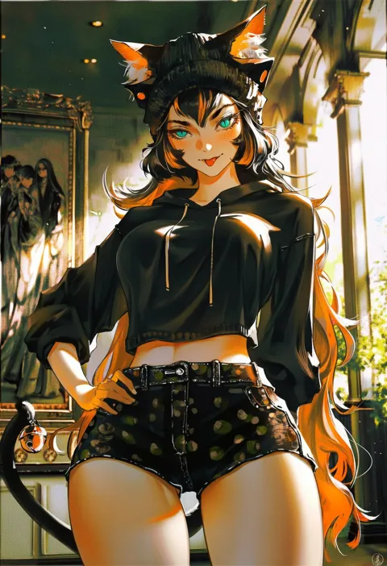
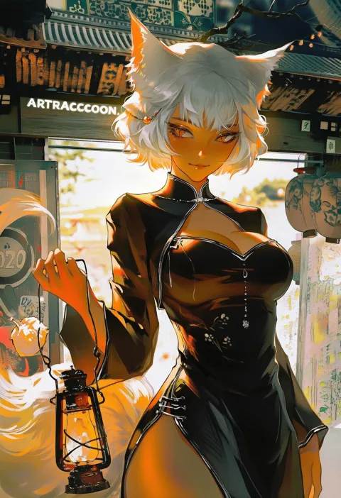
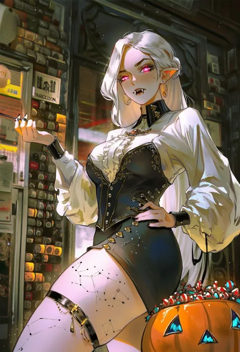
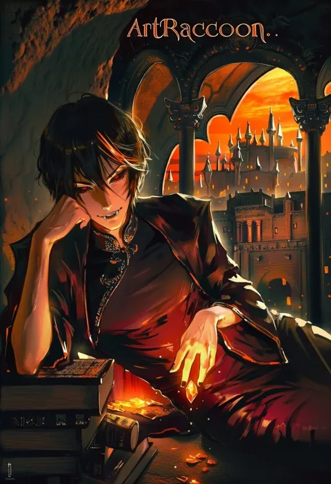
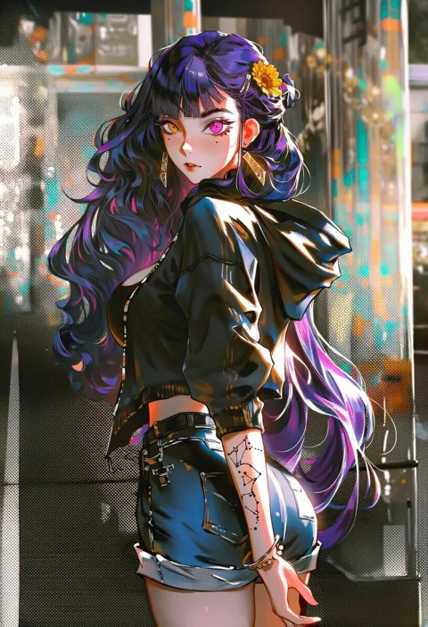
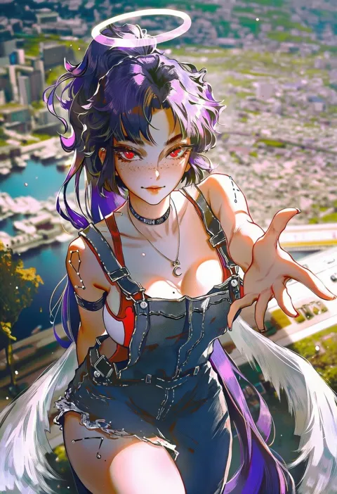
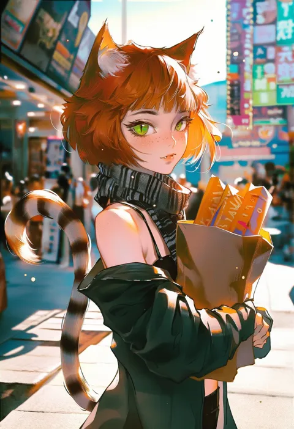
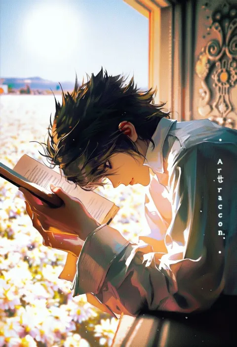
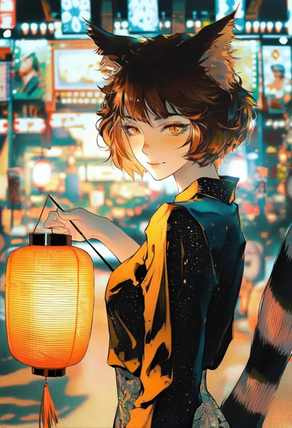
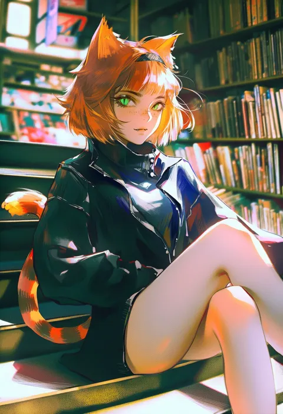
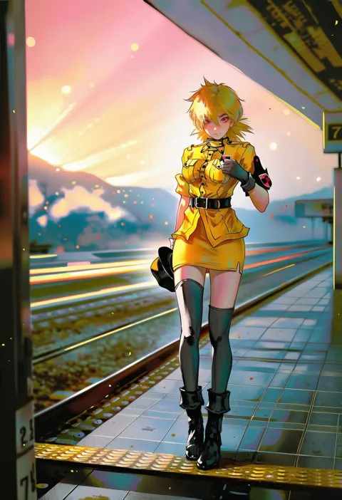
About our Pinterest app
"RaccoonArtis Repost" is a small private tool used only by the owner of this studio. It publishes our own artwork from the Telegram gallery as Pins to our own Pinterest boards. It does not access other users' data. See the Privacy Policy.